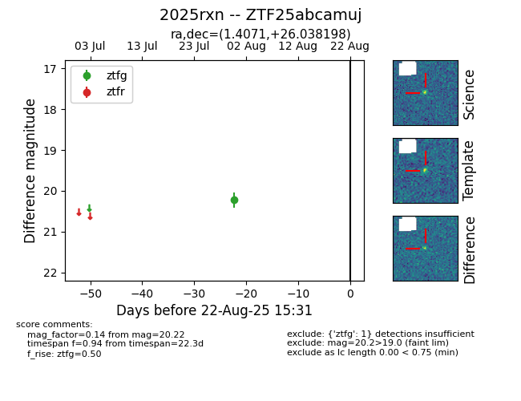

Target 2025rxn at 2025-08-22 15:31, see:
FINK: fink-portal.org/ZTF25abcamuj
Lasair: lasair-ztf.lsst.ac.uk/objects/ZTF25abcamuj
ALeRCE: alerce.online/object/ZTF25abcamuj
TNS: wis-tns.org/object/2025rxn
YSE: ziggy.ucolick.org/yse/transient_detail/2025rxn
alt names
ZTF25abcamuj (ztf,alerce)
2025rxn (tns,yse)
coordinates:
equatorial (ra, dec) = (1.4071,+26.03820)
galactic (l, b) = (110.2412,-35.70213)
photometry
last ztfg=20.22
1 ztfg detections
